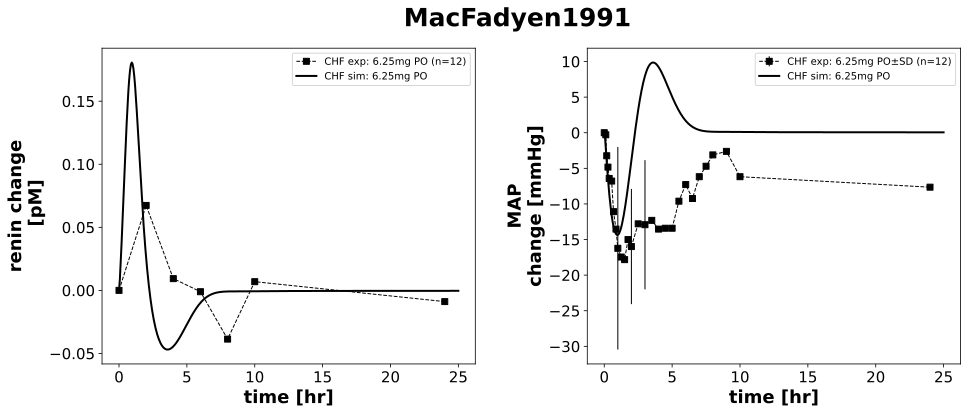

|  |
../../../../experiments/studies/macfadyen1991.py
"""MacFadyen1991"""
from copy import deepcopy
from typing import Dict, Tuple, List, Hashable
import numpy as np
from sbmlsim.data import DataSet, load_pkdb_dataframe
from sbmlsim.fit import FitMapping, FitData
from sbmlutils.console import console
from pkdb_models.models.captopril.experiments.base_experiment import (
CaptoprilSimulationExperiment,
)
from pkdb_models.models.captopril.experiments.metadata import Tissue, Route, Dosing, Health, Fasting, PKPDData,\
CaptoprilMappingMetaData
from sbmlsim.plot import Axis, Figure
from sbmlsim.simulation import Timecourse, TimecourseSim
from pkdb_models.models.captopril.helpers import run_experiments
class MacFadyen1991(CaptoprilSimulationExperiment):
"""Simulation experiment for MacFadyen1991.
Comparison the first dose responses to low dose angiotensin converting enzyme inhibitors (captopril,
enalapril, and perindopril) in elderly patients with stable chronic heart failure.
"""
dose = 6.25
ang = {
"ang1": 6.03,
"ang2": 3.38,
}
routes = "PO"
colors = {
"control": CaptoprilSimulationExperiment.renal_colors["Control"],
"CHF": "black" #CaptoprilSimulationExperiment.cardiac_colors["Control"]
}
elements_unique = ["MAP (change absolute)", "concentration change absolute_renin"]
def datasets(self) -> dict[str, DataSet]:
dsets = {}
self.reset_state()
for fig_id in ["Fig1", "Fig2"]:
df = load_pkdb_dataframe(f"{self.sid}_{fig_id}", data_path=self.data_path)
for label, df_label in df.groupby("label"):
dset = DataSet.from_df(df_label, self.ureg)
for element in self.elements_unique:
if element in label and label.startswith("CAP"):
self.data_collection(element=element, label=label)
dset.unit_conversion(
self.data_type, self.conversion_factor
)
dsets[f"{label}"] = dset
break
#console.print(dsets.keys())
#console.print(dsets)
return dsets
def simulations(self) -> Dict[str, TimecourseSim]:
# for what?
Q_ = self.Q_
tcsims = {}
# single dose
tcsims[f"cap_{self.routes}_{self.dose}"] = TimecourseSim(
Timecourse(
start=0,
end=25 * 60, # minutes
steps=400,
changes={
**self.default_changes(),
f"{self.routes}DOSE_cap": Q_(self.dose, "mg"),
f"HR": Q_(75.9, "1/min"),
f"[ren]": Q_(1.1*7.6, "pg/ml") / self.Mr.ren,
f"ren_ref": Q_(1.1*7.6, "pg/ml") / self.Mr.ren,
"f_cardiac_function": Q_(
(self.cardiac_map["Moderate cardiac impairment"] * 6 + self.cardiac_map["Severe cardiac impairment"] * 5 + self.cardiac_map["Cardiac failure"] * 1) / 12, "dimensionless"
),
},
)
)
return tcsims
def fit_mappings(self) -> Dict[str, FitMapping]:
mappings = {}
for kr, dset_id in enumerate(self.clabels):
element = self.element_ids[kr]
mappings[f"fm_capPO_{self.dose}{element}_plasma_all"] = (
FitMapping(
self,
reference=FitData(
self,
dataset=dset_id,
xid="time",
yid="mean",
yid_sd="mean_sd",
count="count",
),
observable=FitData(
self,
task=f"task_cap_{self.routes}_{self.dose}",
xid="time",
yid=self.yids[kr],
),
metadata=CaptoprilMappingMetaData(
tissue=Tissue.PLASMA,
route=Route.PO,
dosing=Dosing.SINGLE,
health=Health.HEART_FAILURE,
fasting=Fasting.LIGHT_BR,
data=PKPDData.PD
),
)
)
# console.print(mappings)
return mappings
def figures(self) -> Dict[str, Figure]:
yids_unique = ["ren_change", "MAP_change"]
fig = Figure(
experiment=self,
sid="PD",
num_rows=1,
num_cols=2,
name=f"{self.__class__.__name__}",
height=self.panel_height,
width=self.panel_width * 2,
)
plots = fig.create_plots(
xaxis=Axis(self.labels["time"], unit="hr"), legend=True
)
for ky, yid_unique in enumerate(yids_unique):
plots[ky].set_yaxis(self.labels[yid_unique], unit=self.units[yid_unique])
for k, yid in enumerate(self.yids):
if yid == yid_unique:
# dataset
plots[ky].add_data(
dataset=self.clabels[k],
xid="time",
yid="mean",
yid_sd="mean_sd" if yid_unique == "MAP_change" else None,
count="count",
label=f"CHF exp: {self.dose}mg PO",
color=self.colors["CHF"],
)
# simulation
plots[ky].add_data(
task=f"task_cap_{self.routes}_{self.dose}",
xid="time",
yid=yid_unique,
label=f"CHF sim: {self.dose}mg PO",
color=self.colors["CHF"],
)
return {fig.sid: fig}
if __name__ == "__main__":
run_experiments(MacFadyen1991, output_dir=MacFadyen1991.__name__)
{kind=link}